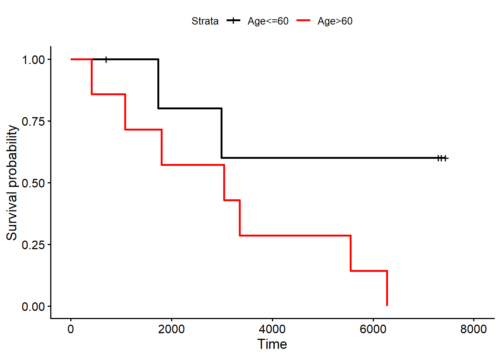
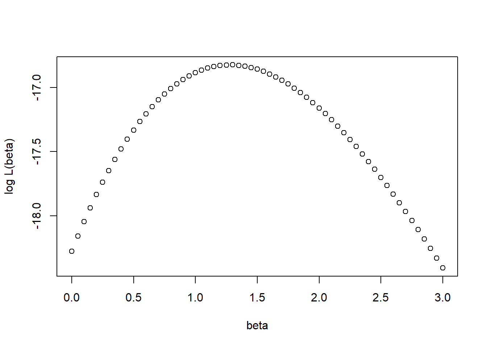
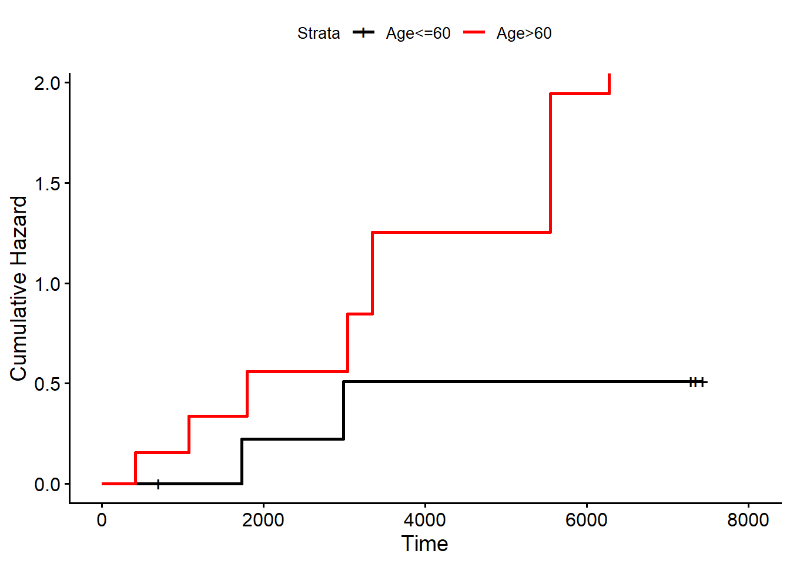

![]()

Survival Analysis II
Quarto
R
Academia
Medical Statistics
Survival Analysis
Good day dear readers and, as usual, I welcome you to my latest monthly post update on my blog. It has been a couple of months that I have delved into different basic topics of medical statistics, from descriptives, to linear and logistic regression. Today I would like to wrap up the discussion on the topic with a more in-depth look at some standard survival analysis methods. If some of the terms appearing here are unknown to you, I recommend checking one of my past posts introducing the overall theme and basic elements of survival analysis, since today I will take those concepts as granted. I must apologise to my dear HTA readers who need to wait a little more before going back to my main research interests. I promise them that, after this relative long break on medical statistics, I will resume treating typical HTA topics and content, which is effectively my intention. I think this digression on basic statistics has been very refreshing, at least for me, in order to distance myself a little bit from my usual topics and, from time to time, I will probably do something again similar in the future. I really like HTA and stats methods therein but a change of topics is needed at some point to help myself seeing things from a different perspective.
Regardless, let’s jump in today’s concluding topic of medical statistics, which focusses on one of the most commonly adopted methods in survival analysis: the Proportional Hazards Model or, as it is often referred to, Cox’s regression.
Background
First, let’s review the standard logistic model for binary outcomes which was introduced a couple of posts ago, which is commonly expressed as
\[ \log \Bigg( \frac{\pi}{1-\pi} \Bigg) = \beta_0 + \beta_1 x_1 + \ldots + \beta_q x_q \] or, alternatively, as
\[ \Bigg( \frac{\pi}{1-\pi} \Bigg) = \text{exp}\Bigg(\beta_0+\beta_1x_1 + \ldots + \beta_qx_q \Bigg) = \text{exp}(\beta_0)\text{exp}(\beta_1x_1)\ldots\text{exp}(\beta_qx_q), \] which implies \(\text{odds}=\text{baseline odds} \times \text{effect of }x_1 \times \ldots \times \text{effect to }x_q\).
Now, let’s consider survival outcomes, e.g. time until an event of interest, which are usually defined using a pair of variables \(t_i,\delta_i\):
- \(t_i\) is either “time to event” or “time at which censoring occurs”.
- \(\delta_i\) indicates whether the subject had the event (1) or was censored (0).
Survival data can be summarised using the survival function \(S(t)=P(T>t)=1-F(t)\), which can be estimated using the Kaplan-Meier estimate with the log-rank test being used to compare survival across groups.
Modelling Survival Data
We may wish to quantify how predictors influence survival and/or adjust for other variables. In this case, the typical approach used is the proportional hazards model, which consists in modelling the hazard function rather than the survival time directly. This is the probability of having an event at time \(t\) conditional on having survived until that time.
In particular, we define the hazard function as
\[ h(t) = \text{lim}_{\delta_t \rightarrow0} \Bigg\{ \frac{F(t+\delta_t) - F(t)}{\delta_t} \Bigg\} \times \frac{1}{S(t)}, \] where \(\frac{F(t+\delta_t) - F(t)}{\delta_t} = \frac{P(t\leq T < t + \delta_t )}{P(T\geq t)}=P(t\leq T < t+\delta_t \mid T \geq t)\). We can also write
\[ \text{lim}_{\delta_t \rightarrow0} \Bigg\{ \frac{F(t+\delta_t) - F(t)}{\delta_t} \Bigg\} = f(f), \] which means we can equivalently express the hazard function as \(h(t)=\frac{f(t)}{S(t)}\).
As an example, we might be interested in whether the survival of \(13\) women (Figure 1) with breast cancer depend on age.
Define \(h_{\geq 60}(t)\) and \(h_{<60}(t)\) as the hazards of death for the older and younger groups, respectively. The proportional hazards model assumes the hazard for the older group to be be always proportional to the hazard of the younger group:
\[ h_{\geq 60}(t)= \psi \times h_{<60}(t), \] where \(\psi>0\) is the hazard ratio which is a constant over time. Using more general regression notation:
\[ h(t\mid x)=h_0(t)\text{exp}(\beta x), \] where \(x\) is either \(1\) (age \(60\geq 60\)) or \(0\) (age \(<60\)), \(h_0(t)\) is the baseline hazard function for an individual whose predictor value is zero, and \(\text{exp}(\beta)\) is the hazard ratio for a woman aged \(\geq 60\) comapred to one aged \(<60\).
We could specify a distribution for the survival times \(f(t)\) and hence estimate \(h_0(t)\) and \(\beta\) using maximum likelihood. However, the most popular approach makes no assumptions regarding \(f(t)\) and does not estimate \(h_0(t)\), leading to the Cox proportional hazards model which estimates relative risk. The regression coefficient is estimated using ML via partial likelihood based on ranked death times.
We consider the patients still in the study at each time of death and calculate the conditional probability \(P(\text{subject }i \text{ with predictor }x_i \text{ dies at }t_i\mid \text{ one death at }t_i)\). Consider the \(r\) unique ordered death times \(t_{(1)}<t_{(2)}<\ldots<t_{(r)}\), and let \(R(t_{(j)})\) be the risk set of individuals still in the study just before \(t_{(j)}\). The partial likelihood function is given by
\[ L(\beta)= \Pi_{j=1}^r \frac{\text{exp}(\beta x_{(j)})}{\sum_{l\in R(t_{(j)})}\text{exp}(\beta x_{(l)})} \]
where \(x_{(j)}\) is the predictor for the subject who dies at time \(t_{(j)}\). Let’s go back to our example, and consider the observed survival times (in days) for both age groups
[1] 1 2 3 4 5 6 7 8 9 10 11 12 13The first death at time \(t_{(1)}=413\) has \(x=1\) (age \(>60\)), so that the corresponding risk set \(R(t_{(1)})\) contains all \(13\) patients (\(7\) in group 1 and \(6\) in group 0), and its likelihood contribution is
\[ \frac{\text{exp}(\beta \times 1)}{7 \times \text{exp}(\beta \times 1) + 6 \times \text{exp}(\beta \times 0)} = \frac{\text{exp}(\beta)}{7 \times \text{exp}(\beta) + 6} \]
The second death at time \(t_{(2)}=1075\) has \(x=1\), so that the corresponding risk set \(R(t_{(2)})\) contains \(11\) patients (\(6\) in group 1 and \(5\) in group 0), and its likelihood contribution is
\[ \frac{\text{exp}(\beta)}{6 \times \text{exp}(\beta) + 5} \]
The third death at time \(t_{(3)}=1735\) has \(x=0\), so that the corresponding risk set \(R(t_{(3)})\) contains \(10\) patients (\(6\) in group 1 and \(4\) in group 0), and its likelihood contribution is
\[ \frac{\text{exp}(\beta)}{6 \times \text{exp}(\beta) + 4} \]
We multiply all \(9\) contributions together and find the value of \(\beta\) that maximises this function (Figure 2).

P-values can be obtained using Wald tests or likelihood ratio tests.
library(survival) #lead package to fit cox model
coxm1 <- coxph(Surv(time, cens) ~ age, data=df_ex1) #fit cox model to breast cancer data set
coxm1Call:
coxph(formula = Surv(time, cens) ~ age, data = df_ex1)
coef exp(coef) se(coef) z p
ageAge>60 1.3693 3.9328 0.8175 1.675 0.0939
Likelihood ratio test=3.39 on 1 df, p=0.06542
n= 13, number of events= 9 It is easy to generalise the model to \(p\) explanatory variables \(x_1,\ldots,x_p\)
\[ h(t\mid x_1,\ldots,x_p) = h_0(t)\text{exp}(\beta_1 x_1 + \ldots + \beta_p x_p) \] or
\[ h(t\mid \boldsymbol x) = h_0(t)\text{exp}(\boldsymbol \beta^\prime \boldsymbol x) \] where \(h_0(t)\) is the hazard function for an individual with predictors that are all zero. The partial likelihood is now given by
\[ L(\beta)=\Pi_{j=1}^r\frac{\text{exp}(\boldsymbol \beta^\prime \boldsymbol x_{(j)})}{\sum_{l\in R(t_{(j)})}\text{exp}(\boldsymbol \beta^\prime \boldsymbol x_{(l)})}. \] Different types of predictors are handled in the same way as with logistic regression, while \(\text{exp}(\beta_j)\) represents the hazard ratio for predictor \(x_j\), i.e. increase in hazard compared to baseline category or for a one unit increase in \(x_j\).
Testing Assumptions
The proportional hazards assumption specifies that the failure rate is a constant multiple of the baseline hazard at all times, and can therefore be investigated using the log cumulative hazard plot. Integrate the Cox model equation over \(t\) and take logs
\[ \begin{aligned} \int_0^t h(t \mid \boldsymbol x) du &= \text{exp}(\boldsymbol \beta^\prime \boldsymbol x) \int^t_0 h_0(u)du\\ H(t\mid \boldsymbol x) & = \text{exp}(\boldsymbol \beta^\prime \boldsymbol x)H_0(t)\\ \log H(t\mid \boldsymbol x) &= \boldsymbol \beta^\prime \boldsymbol x + \log H_0(t), \end{aligned} \] where \(H(t\mid \boldsymbol x) = \int_0^t h(t \mid \boldsymbol x) du\) and \(H_0(t)=\int^t_0 h_0(u)du\) are cumulative hazard functions and their differences should be constant over time.
If we have two or more groups, we estimate the log cumulative hazard for each group and plot them against (log) time. We use \(H(t)=-\log S(t)\) and the plot should produce parallel lines if the assumption is met (Figure 3).

We can use stratification to deal with non-proportional hazards for covariates that are not of interest, whose effect is therefore not estimated. We can adjust for such variables, e.g. gender, using the stratified Cox model
\[ h(t\mid \boldsymbol x) = h_{0k}\times \text{exp}(\beta_1 \times \text{protect}), \] where \(k=0\) (women) or \(1\) (men). The partial likelihood function for this model is
\[ PL(\beta)=PL_0(\beta) \times PL_1(\beta). \] # Time-Varying Covariates
We may also consider covariates that are not fixed for patients throughout the follow-up period, e.g. a study of patients who have had a myocardial infarction, with serum cholesterol (\(X\)) being measured at regular intervals. We may consider a model where the hazard of death is influenced by the most recent value of cholesterol rather than the baseline value. The cox model is
\[ h(t\mid x(t)) = h_0(t)\times \text{exp}(\beta x(t)). \] Let there be \(3\) patients in the study with \(1\) patient dying at time \(t_1\), with likelihood contribution
\[ \frac{\text{exp}(\beta x_1(t_1))}{\text{exp}(\beta x_1(t_1))+\text{exp}(\beta x_2(t_1))+\text{exp}(\beta x_3(t_1))}, \] where \(x_i(t_j)\) is the cholesterol level for patient \(i\) at time \(j\). For example, assume that patient \(2\) dies at \(t_2\), then their likelihood contribution is
\[ \frac{\text{exp}(\beta x_2(t_2))}{\text{exp}(\beta x_2(t_2))+\text{exp}(\beta x_3(t_2))}. \]
When entering the data for a patient, we need to enter a separate row for each of their covariate values. We define entry \(t_0\) and finish \(t\) times for each interval defined by covariate changes. A useful application is time-varying effects, where the predictor value stays the same but the effect varies over time (non-proportional hazards):
\[ h(t\mid \boldsymbol x)= h_0(t) \times \text{exp}(\boldsymbol \beta(t)\boldsymbol x). \] For example, take the model where the coefficient of \(X\) changes linearly over time
\[ h(t\mid x)= h_0(t) \times \text{exp}(\beta(t) x) = h_0(t) \times \text{exp}(\beta_{11}x + \beta_{12}xt). \] The term \(xt\) is a time-varying covariate which needs to be updated at each event time, i.e. whenever the likelihood functions is calculated.
Conclusions
I hope this sneak peak into Cox regression was helpful for some of you. Key concepts to be grasped here are related to:
understanding the hazard function and its role in the proportional hazard model
modelling survival data using the Cox model and interpret the results
investigate the proportional hazards assumption
calculate the likelihood function for the model
As per usual, that’s it for today dear readers. With this topic, we conclude the sort of quick overview on basic medical statistics concepts that I wanted to discuss over the last few months. I hope this was useful for you (certainly it was for me for remembering some stuff lost in my memory) and that you enjoyed some of the topics discussed. I might put up a last post with a quick data set analysis covering key methods introduced in this statistics “digression” to provide a nice wrap up of everything that was touched upon, but I need to check if this can be done without taking too long. I will provide an update in my next update. In the meantime, I bid you farewell.